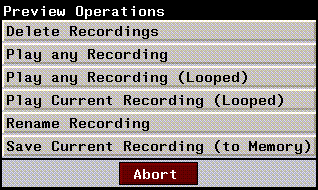

This chapter describes the basics of the N-Dynamics interface. It describes the basic components of the Script Editor, basic script management tasks, animating scripts, making and saving recordings, and more.
The work area of N-Dynamics is the script editor, shown in Figure 2.1. You create, edit, and modify scripts in the script editor:
The Script Editor
Navigation Box
The navigation box shows your relative depth in the current script.
Title Bar
Displays the name of the current script. You can (CLICK-R) on the title bar to perform various script level operations, described later.
Channels
When you first create a script, the script editor pane displays an empty gray window to represent the script. To build a script, you fill it with channels.
Channels and their subchannels are displayed as nested blocks.
Now-Time Cursor
The vertical line running up and down the script is called the now-time cursor. As you move the mouse left and right over a script, both the time box and the frame box update interactively.
Frame Range Area
The frame range area contains both the time box and the frame box (described below). It shows the length of the script and shows your current position within the script.
Time Box
The time box shows the time (in seconds) that corresponds to the position of the now-time cursor. The two small numbers in the upper-left and upper-right corners (0.000 and 1.000 in Figure 2.1) show the start and end times for the script.
Frame Box
The frame box shows the frame number that corresponds to the position of the now-time cursor.
Frame Range Box
The frame range box (next to the Playback button) shows the frame range that is currently "selected." These are the frames that will be animated or played back with the Animate or Playback buttons (described below).
Time Line
The time line lets you control the portion of the script currently in view in the
N-Dynamics frame. (The time line regulates which portion of a script is animated when it is executed.) The time line is discussed in more detail in Chapter , "Using the Script Editor."
Navigation Arrow
If a navigation arrow appears in a channel, it indicates that the channel contains one or more subchannels. N-Dynamics has a hierarchical structure, so it is possible to place channels within other channels.
Script Length Box
The script length box indicates the current length of the script. You can also (CLICK-L) on the button and modify the length of the script, specifying either a target number of frames or a script length (in seconds).
Menu Buttons
There are five buttons across the bottom of the Script Editor:
Each of these are described in the following sections.
You use the File button to create, copy, kill, rename, select, load, and save scripts. A script is a series of instructions that lets you trigger different events in the other N·World products.
File
You might write a script, for example, that rotated a cube (in N-Geometry), applied a material to the cube and rendered it (in N-Render), then composited the colored cube onto an image (in N-Paint). Most operations in the N·World suite of products can be animated using N-Dynamics-see Chapter 5, "Dynamic Operations" for a complete list.
Both of these options are described below.
Each of the options on the Script Operations menu is described in the following sections.
Creating a New Script
The Create New Script command lets you start a new script in N-Dynamics.
1. (CLICK-L) on File>Create New Script to create a new script.
2. Enter the directory and name you want to use for the new script:
You can create any number of scripts in N-Dynamics.
Making a Copy of a Script
To make a copy of a script in memory (also to memory):
1. Make the script you want to copy the current script.
2. (CLICK-L) on File>Copy this Script.
Deleting a Script
To delete a script from memory:
1. (CLICK-L) on File>Delete Scripts.
Figure 2.6 Killing a script from memory2. (CLICK-L) to highlight each script you want to delete.
Renaming a Script
If you want to change the name of the currently selected script:
1. (CLICK-L) on File>Rename this Script.
Figure 2.7 Renaming a script in memory
Making a Script the Current Script
If you have more than one script loaded into memory and want to select which script to make the current script:
Loading a Script
Loading a script reads a script from disk; if any elements (such as objects or materials) were referenced by the script, they are also loaded when you read in the script.
1. (CLICK-L) on File>Load Scripts.
Figure 2.9 Reading a script from disk
Loading a Script from your Default or a Previously Used Directory
At the top of the menu shown in Figure 2.9 is a list of directories from which you have already loaded elements. (By default, only the current user's home directory is displayed here).
To load a script from this directory:
1. (CLICK-L) on the directory.
Figure 2.10 Reading a script from disk2. (CLICK-L) on each script you want to load.
To specfy a "random" directory:
1. (CLICK-L) on File>Load Scripts>Specify a new Directory.
Figure 2.11 Specifying a new directory2. Enter the name of the directory from which you want to load a script.

4. (CLICK-L) on each script you want to load.
To save a script and (optionally) any objects associated with that script:
1. (CLICK-L) on File>Save Script.
Figure 2.13 Writing scripts and objects
You might, for example, create several test animations then play them back for comparison. See the section "Animate," on page 2-29 for more information on recordings.
Saving Recordings
To save a recording (black-and-white preview) to disk:
If you are working on a large project whose files are located in a set group of directories, you can create a project. A project is nothing more than a named set of directories. When you load a project, you load the directories into the menu described in Figure 2.9, making it easy to select them with a single mouse click.
Project Operations
You might, for example, create a project named "space_warrior" that used
N-Geometry objects from one directory and N-Paint images from another. Simply by loading the project "space_warrior" into memory, any associated directories are made added to the menu in Figure 2.9.
To see the project operations menu:
Setting the Current Project
Selecting the project you want to work with loads all the directories associated with the project into the appropriate directory lists. These directories are displayed at the top of the menu shown in Figure 2.15 and whenever you (CLICK-R) on a field that specifies a directory in N-Dynamics).
To select the project you want to work with:
1. (CLICK-L) on File>Set Current Project.
Figure 2.16 Selecting a project2. (CLICK-L) on the project you want to make the current project.
Edit Current Project
To specify which directories should be included in the current project:
1. (CLICK-L) on File>Edit Current Project.
Figure 2.17 Specifying directories for a project2. (CLICK-L) to highlight each directory you want to make part of the project.
Creating a New Project
To create a new project:
1. (CLICK-L) on File>Load Scripts>Create New Project.

2. Enter the name for the project.
1. (CLICK-L) on File>Load Scripts>Delete Project Definitions.
Figure 2.19 Deleting project definitions2. (CLICK-L) to highlight each project definition you want to delete.
The Export button is used in conjunction with Nichimen's Game Express and Game Exchange tools to preview and export animation data created in N·World.
Export
In order to use the Export button, you must have:
The platforms to which you can export are displayed on the left side of the dialog box.
The Options dialog box lets you control the "look and feel" of N-Dynamics-how channels are displayed (or highlighted), playback rate, channel colors, and so forth.
Options
If you (CLICK-L) on the Options button at the bottom of the N-Dynamics window, the dialog box in Figure 2.21 is displayed:
If you want to look at different parts of the same script at the same time (for example, you can split the N-Dynamics window; each smaller window is referred to as a "view.")
Views
Adding a View
There are three ways to create additional views in an N-Dynamics script:
Method #1
To add a second view of the current script:
1. Make sure you have a script loaded.
As Figure 2.24 shows, multiple views let you view curves for channels which are not next to each other in the script. Note that you can continue to add as many views as you want, so that you have two, three, or as many views as you need.
Method #2
To add a second view and fill it with a selected channel:
1. (CTRL-L) on the channel you want to get a "close-up" view of.
Figure 2.25 Left, split view of script "triple-rotate"; right, after (CTRL-L) on a selected channel, which creates a second view for just that channel
Method #3
To add a second view by dragging the mouse:
1. (DRAG-L) on the white bar at the bottom of the script editor window.
Single View
Closes all views but the top level view in the N-Dynamics window:
Spacing Views Evenly
If you've already created several views, and want to make them all take up the same amount of space vertically in the N-Dynamics window:
2. (CLICK-L) on Space Views Evenly.

Saving View Configurations
Once you've created several views of a script, you can save them together as a view configuration. The view configuration remembers the size of each view, and the state of each channel in each view.
2. (CLICK-L) on Save Configuration.
Figure 2.28 Saving a configuration to memory
Saved view configurations appear at the bottom of the View Operations menu:
To select a previously saved view configuration:
2. (CLICK-L) on one of the view configurations under the Select Configuration section.
Deleting View Configurations
If you want to delete a view configuration:
1. (CLICK-L) on Views>Delete Configurations.
Figure 2.30 Deleting a view configuration from memory2. (CLICK-L) to highlight each of the configurations you want to delete.
After you've created a script, the Animate button lets you execute it. At each frame, every channel is executed, from top to bottom. When all channels have been executed for the first frame, all channels that affect the second frame are executed, again from top to bottom, and so on until the end of the script is reached.
Animate
Animating Scripts with Paint, Render, or Shading Operations
There are several cases where you should use (CLICK-M) to animate:
If you want to generate test recordings for scripts that contain these operations, you can write those frames to a movie. See the section "Record Movie Image," on page 5-22, for more information; saving a movie file is also described in the N-Dynamics Tutorial.
Animating Part of a Script
If you don't want to animate an entire script, you can use the mouse to select an individual frame, or range of frames that you want to animate in the N-Geometry window.
Animating an Individual Frame
To animate an individual frame:
2. (CLICK-L) on the frame range area of the script.
1. (CLICK-M) and drag the mouse across the frame range area.
Animating a Range of Frames
To animate a range of frames (say frames 50-100 of a 300 frame script):
1. (CLICK-L) on the Frame Range Box.
2. (CLICK-L) on Change Active Frames.
Lets you play back a recording that you have made by executing a script. As described in the section "Animate," on page 2-29, you can save more than one recording for the same script.
Playback
If you want to play back a different recording already loaded into memory:

Deleting a Recording
If you've generated several recordings, and want to delete one or more of them to clean up your work area:
1. (CLICK-R) on the Playback button.
2. (CLICK-L) on Delete Recordings.
Figure 2.32 Deleting recordings3. (CLICK-L) on each recording you want to delete.
Playing a Recording
To play back a recording that has previously been saved (or loaded into) memory:
1. (CLICK-R) on the Playback button.
2. (CLICK-L) on Play any Recording.
Figure 2.33 Playing recordings3. (CLICK-L) on the recording you want to play back.
1. (CLICK-R) and drag the mouse across the frame range area.
Identifying the Last Animated & Last Played Recordings
If you have saved several recordings to memory, played them back, reanimated, then played others back, you might lose track of which recording is which.
When you play back or rename a recording, a menu like the following is displayed:
Playing a Recording in Looped Mode
If you want to play a recording in memory other than the current recording in looped mode:
2. (CLICK-L) on Play any Recording (Looped).
3. Select the recording you want to play back from the menu displayed (which is similar to the one displayed in Figure 2.33).
2. (CLICK-L) on Play Current Recording (Looped).
2. (CLICK-L) on Rename Recording.
You could then use the various Playback commands to play back the recordings one after another.
To save a recording to memory:
2. (CLICK-L) on Save Current Recording (to Memory).
3. Give the recording a name in the dialog box that appears.
Copyright © 1996, Nichimen Graphics Corporation. All rights reserved.